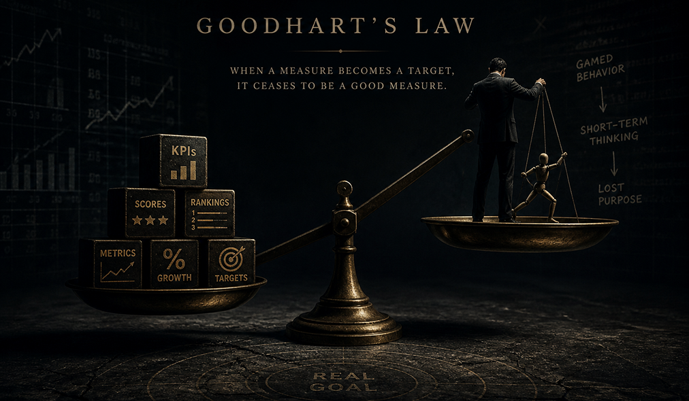

When Your Dashboards Deceive
An interactive essay on Goodhart's Law, the economic principle that silently corrupts KPI dashboards across every industry. Includes real case studies, a live metric simulator, and a practical framework for designing measurements that don't lie.
Read the Essay